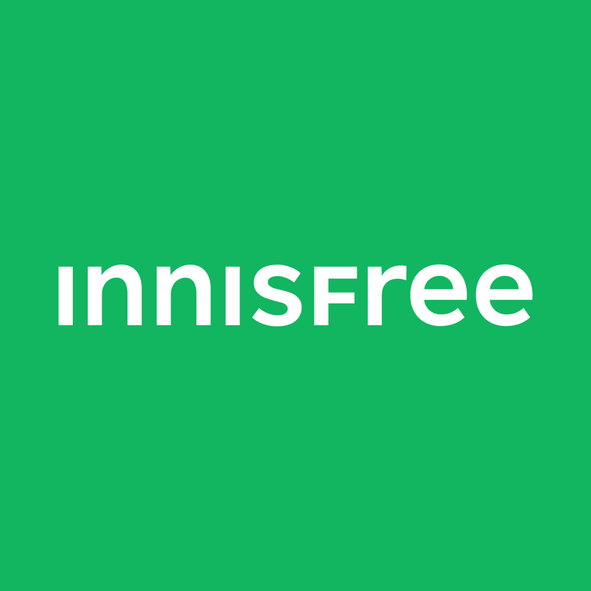

이니스프리 Innisfree
이니스프리(Innisfree)는 아모레퍼시픽이 2000년 론칭한 대한민국의 자연주의 뷰티 브랜드다. 제주 원료를 내세운 스킨케어·색조로 아모레퍼시픽 자연주의 1호 브랜드가 됐다.
최종 업데이트

이니스프리는 어떤 브랜드인가
이니스프리는 2000년 아모레퍼시픽이 선보인 자연주의 화장품 브랜드로, '피부에 휴식을 주는 섬'이라는 이름 아래 제주의 청정 원료를 핵심 자산으로 삼는다. 첫 전환점은 2009년 제주를 전면에 내세운 마케팅의 성공이었고, 두 번째 전환점은 2015년 로드숍 1위 등극이다.
2016년 매출 7,579억원, 매장 약 1,000개로 정점을 찍은 한국 대표 자연주의 브랜드다.
이니스프리는 어떻게 봐야 할까
이니스프리의 차별점은 화학·기능성 중심이던 2000년대 초 시장에서 '자연주의'를 선점하고, 모회사 서성환 회장이 1979년부터 일군 제주 녹차밭이라는 실물 원료 기반을 스토리로 결합한 점이다. 더페이스샵·에뛰드·스킨푸드와의 로드숍 경쟁에서 제주라는 원산지 서사로 우위를 점했으나, 중국 의존과 로드숍 채널 붕괴가 동시에 닥치며 매출은 정점 대비 3분의 1 수준으로 줄었다.
이에 2021년·2023년 두 차례 리브랜딩을 단행해 가상의 섬 '뉴 아일' 세계관과 그래피티풍 로고로 젊은 층을 겨냥했지만, 제주색을 덜어내며 충성 고객 이탈을 부르는 역설이 나타났다. 다만 글로벌 무대에서는 라네즈·코스알엑스와 함께 미국·일본 K뷰티 성장을 견인하는 축으로 재배치되고 있어, 내수 부진과 해외 확장이 엇갈리는 국면이다.
이니스프리는 어떻게 시작되고 성장했나
2000년 출범 당시 한국 화장품 시장은 백화점 고가 라인과 기능성 소구가 주류였고, 저가·자연주의라는 빈자리는 비어 있었다. 아모레퍼시픽은 모회사가 1979년부터 제주에 무농약 녹차밭을 일군 원료 자산을 토대로, 합리적 가격의 자연주의 단독 브랜드를 기획했다.
초기에는 로드숍 5~6위권에 머물렀으나, 2009년 제주 원산지를 전면화한 마케팅이 적중하며 첫 도약을 이뤘고, 2015년에는 경쟁사를 제치고 로드숍 1위에 올라 두 번째 도약을 완성했다. 이후 그린티 라인을 축으로 제품군을 넓히며 2016년 매출 7,579억원, 국내외 약 1,000개 매장 규모로 확장했고, 중국을 비롯한 해외 진출도 본격화했다.
이니스프리의 브랜드 아이덴티티는 무엇인가
핵심 가치는 제주에서 길어 올린 청정 원료와 합리적 가격, 건강한 아름다움이다. 비주얼 아이덴티티는 2021년 비자림 녹음을 담은 짙은 녹색과 간결한 로고타입으로 정돈된 뒤, 2023년에는 채도를 높인 밝은 녹색과 산세리프 그래피티풍 로고, 가상의 섬 세계관으로 한층 젊고 대담하게 전환됐다.
타깃은 자연 친화적 성분을 선호하는 20~30대 중심이며, 보이스는 정직한 원료와 솔직한 효능을 담백하게 전하는 친근하고 진정성 있는 어조를 유지한다.
이니스프리의 대표 제품과 서비스는 무엇인가
스킨케어·메이크업·헤어바디를 아우르며, 시그니처는 수분 진정 카테고리의 그린티 씨드 세럼과 피지 관리의 노세범 미네랄 파우더다. 그린티 씨드 세럼 80ml는 공식가 약 2만4천원, 노세범 미네랄 파우더 5g은 정가 9천원대로 합리적 가격대를 형성한다.
판매는 자사몰과 단독 매장, 올리브영 등 멀티 브랜드숍, 면세·해외 유통으로 다변화돼 있다.
이니스프리는 누가 만들고 이끌었나
모회사는 아모레퍼시픽이다.
이니스프리는 지금 어떤 상태인가
본사·모회사는 아모레퍼시픽이며, 별도 법인 형태로 운영된다. 2024년 매출은 2,246억원, 영업이익은 16억원으로 각각 전년 대비 약 18%, 84% 감소했다.
직전 2023년은 매출 2,738억원·영업이익 103억원, 2022년 영업이익은 324억원이었다. 국내 매장은 2020년 약 490개에서 320여 개로 축소됐다.
2025년 이후 개별 확정 실적은 미공개이며, 모회사 차원에서는 라네즈·코스알엑스와 함께 미국·일본 등 해외 성장 축으로 재배치되고 있다.
더 알아둘 것
2000년 아모레퍼시픽의 자연주의 1호 브랜드로 출범했으며 브랜드명은 예이츠의 시에서 따왔다.
이니스프리 연혁 — 주요 사건은 언제였나
이니스프리 로고는 어떻게 변해왔나
대표 로고대표 브랜드 마크
대표 로고 1보관 이미지 1자주 묻는 질문
이니스프리는 어느 나라 브랜드인가요?
이니스프리는 한국의 뷰티·퍼스널케어 브랜드입니다.
이니스프리는 언제 설립되었나요?
이니스프리는 2000년 설립되었습니다.
이니스프리의 브랜드 아이덴티티는 무엇인가요?
핵심 가치는 제주에서 길어 올린 청정 원료와 합리적 가격, 건강한 아름다움이다.
이니스프리의 대표 제품은 무엇인가요?
스킨케어·메이크업·헤어바디를 아우르며, 시그니처는 수분 진정 카테고리의 그린티 씨드 세럼과 피지 관리의 노세범 미네랄 파우더다.
이니스프리는 현재 어떤 상태인가요?
본사·모회사는 아모레퍼시픽이며, 별도 법인 형태로 운영된다.
이니스프리의 창업자는 누구인가요?
이니스프리의 창업자는 서경배입니다(위키데이터 기준).
이니스프리의 본사는 어디에 있나요?
이니스프리의 본사는 서울특별시에 있습니다(위키데이터 기준).
출처와 검증
이니스프리 관련 참고: 공식 웹사이트 · 위키데이터 Q16176002 · 한국어 위키백과 · 영어 위키백과. 브랜드명은 한글과 원어를 함께 표기하되 데이터에 없는 표기는 만들지 않습니다. 기원 국가·설립연도는 검수된 정의문에서 확인된 값을 우선하고, 없을 때만 공식 웹사이트 URL이 일치하는 위키데이터 개체의 값을 씁니다. 위키데이터 값은 2026-09-07 기준입니다.